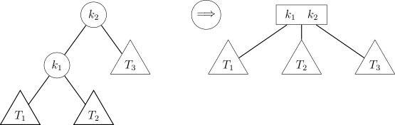
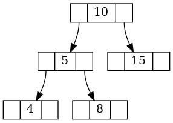

Absorção Árvore 2-3
Considere a seguinte definição de um nó de uma árvore 2-3:
typedef struct No23 {
int key[2];
struct No23 *child[3];
int nkeys;
int leaf;
} No23;
Na árvore 2–3, diz-se que ocorre uma operação de absorção quando um nó pai do tipo nó–2 (isto é, contendo exatamente uma chave) possui um filho que também é um nó–2.
A operação de absorção consiste em incorporar a chave do nó filho ao nó pai, transformando o nó pai em um nó–3, respeitando a ordenação das chaves e a estrutura da árvore.

A absorção deve ser realizada com o filho cuja subárvore possui maior altura e seja um nó-2.
Imagine o seguinte nó pai:

Após a absorção, o nó fica da seguinte maneira: